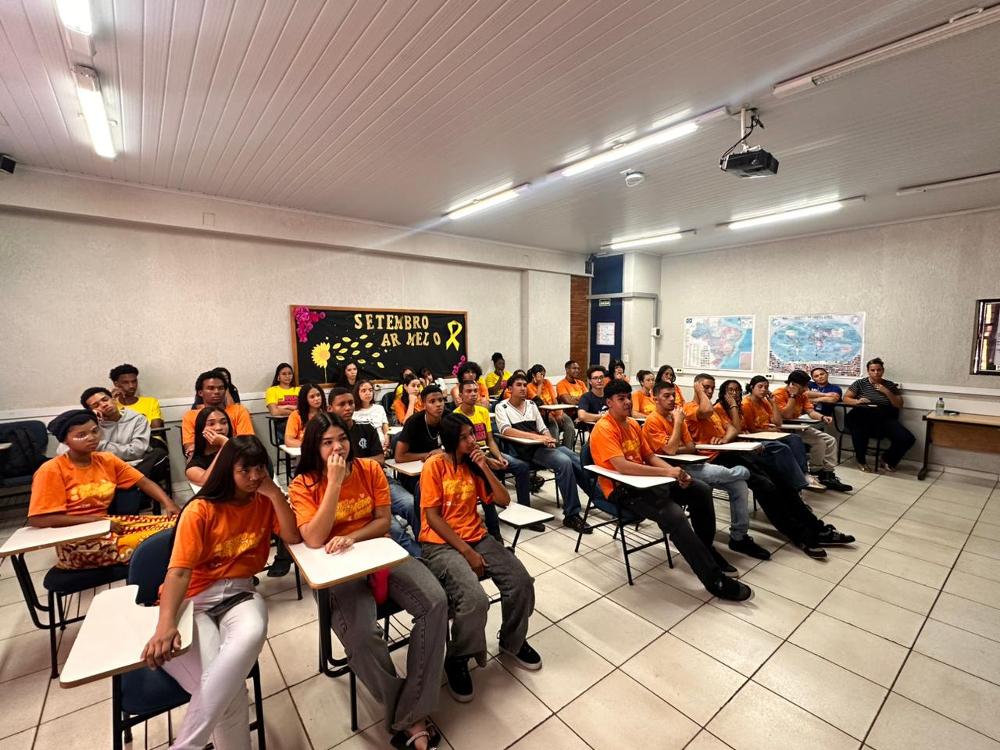
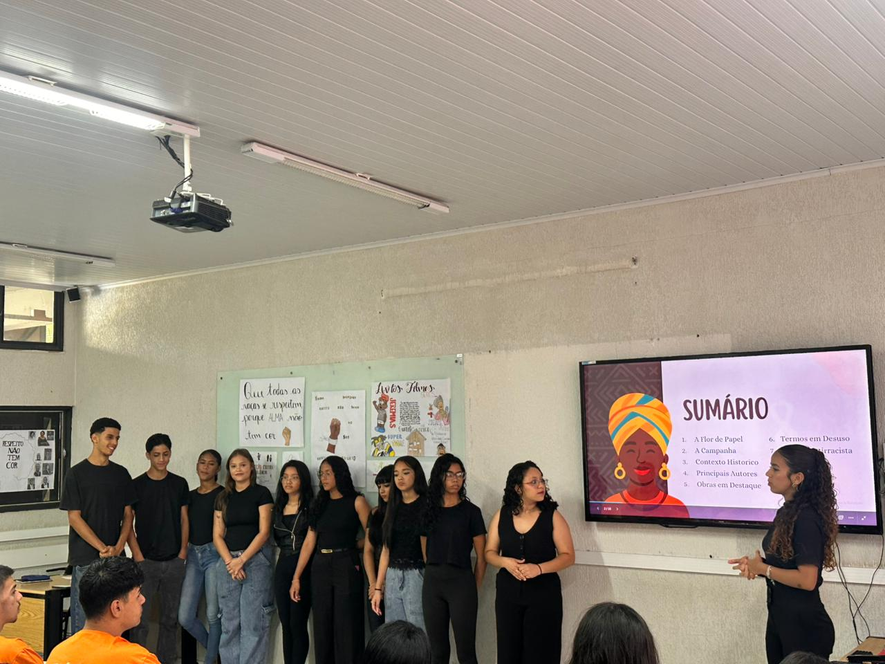

Vozes Negras na Literatura
Histórias que carregam identidade, resistência e transformação.
O projeto Vozes Negras na Literatura nasceu com o objetivo de valorizar e dar visibilidade a autores negros, destacando a importância de suas narrativas na construção cultural e social.
Através da literatura, buscamos ampliar perspectivas, promover reflexão e fortalecer a diversidade de vozes que moldam o nosso mundo.
Cada obra apresentada aqui é um convite para conhecer histórias que inspiram, questionam e deixam marcas profundas em quem lê.

Galeria do Projeto
Alguns registros das atividades, exposições e produções realizadas durante o projeto.

